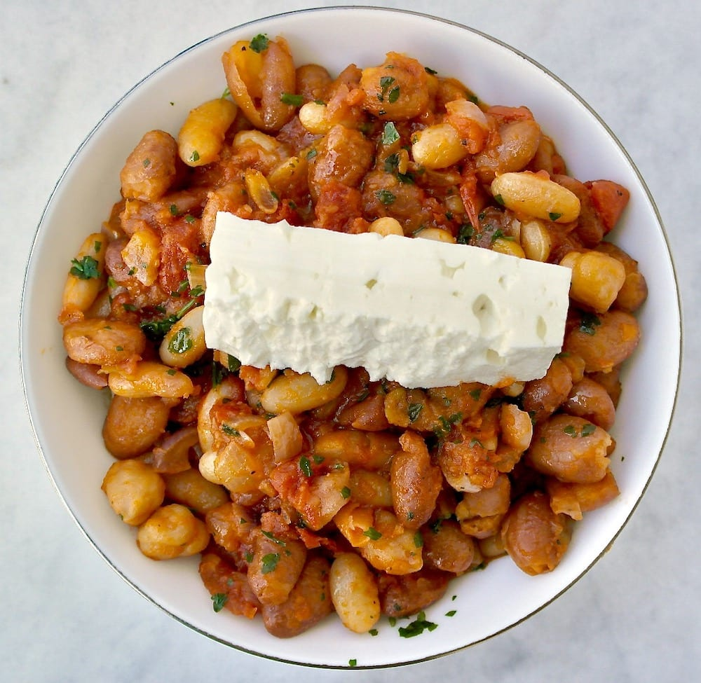

Beans and Cheese

Description
This nutritious superfood is great for anyone. It can be made very tasty. If you are vegetarian or want to take a break from eating meat but still want to hit that protein target, this is a great meal
Now without wasting any time, let's cook it
Ingredients
- Your choice of soaked beans. Kidney or black beans preferred
- Your choice of cheese. Haloumi or feta preferred
- Your choice of other cheese to sprinkle. Aged tasty cheddar preferred
Steps
- Take a pan and add well soaked beans into the pan and heat up
- After slightly fried, add small cubes of haloumi cheese and let it be fried along with beans
- Once you notice a golden shade on the cheese cubes, add little salt, pepper/paprika as per your taste
- Mix well and sprinkle aged cheddar on top and let it slightly melt into the beans
- Enjoy your beans and cheese